Hatching Ducklings & Chicks
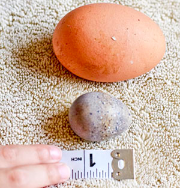 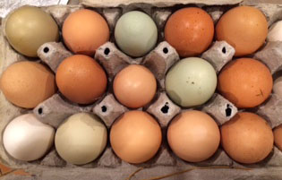 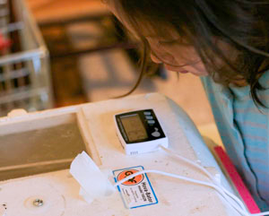 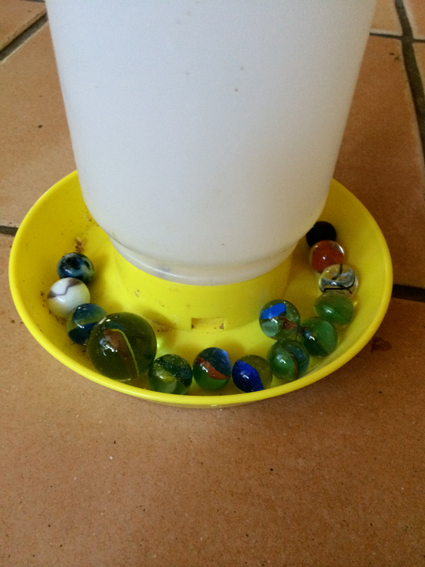 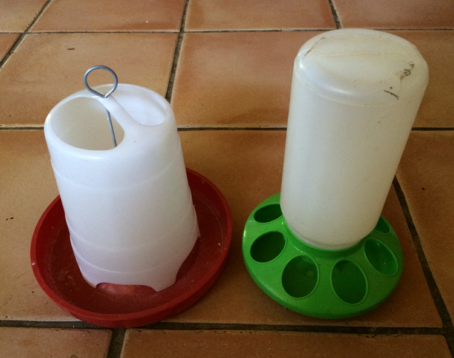 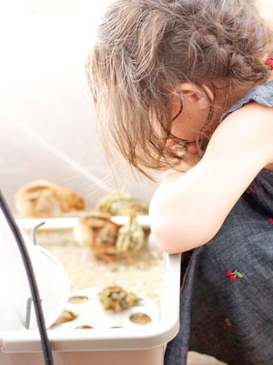 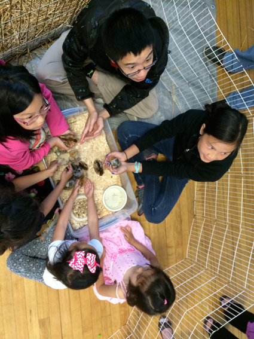 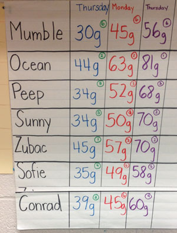
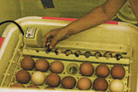 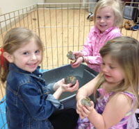 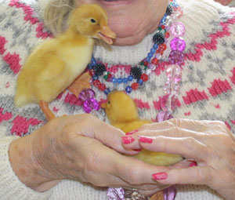 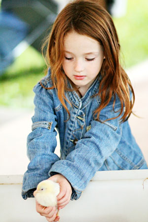 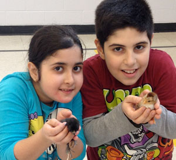 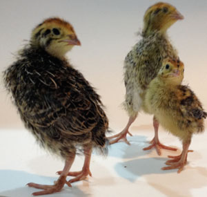 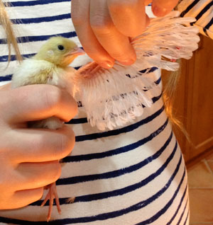 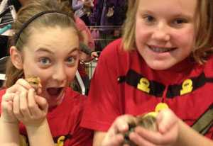. 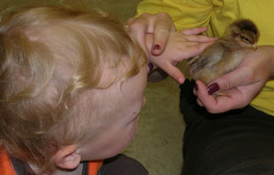 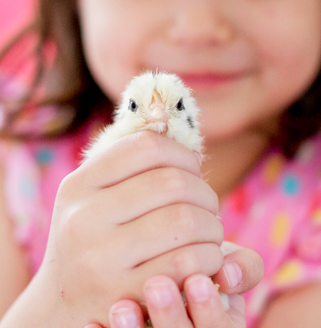 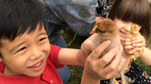 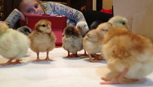 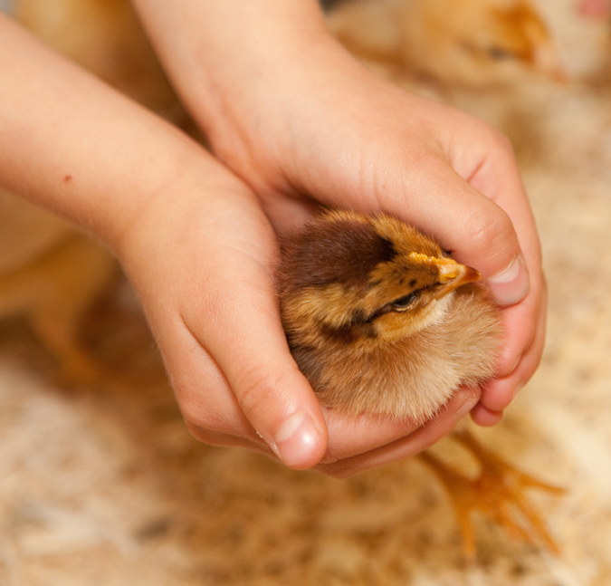 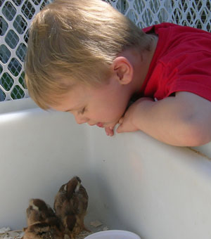
|
COVID 2020 Schools may be closed, but home classes are happening. Our incubators are being rented by people all over to experience the hatching right at home. Plesae email with your contact information and type of egg you wish to hatch. We will advise you of the next opening as fast as we can get to your email. We are curently booking 2 months ahead of today as your start date. WE ARE NOT offering any travel services at this time. Clients must come to our farm in Lakehurst. We have strict protocols in place to keep you and our farm healthy. WHO CAN HATCH? Whether in your classroom as part of the curriculum or in a senior's home as you count down the days to the hatch, we will be right there to support! What about hatching in your own home for home schooling or a personal "eggs-perience"? Woolley Wonderland Farm is happy to time a clutch of eggs to hatch with you for a birthday or other milestone. You won't feel alone through the process. That is one of the joys of the Teachers and facilitators love that we are an away as they nervously try to hatch their first eggs. We are there to support you and make YOU the best ever in the wide-eyes as YOU lead the hatching process. The kit will have everything you need for your hatch. Some schools and school boards have their own incubators - a superb investment! Woolley Wonderland is thrilled to provide you with eggs to hatch. You can use your own incubator and count down the miracle of birth. We'll be there to answer questions if you're nervous about the experience - it's actually quite fun and easy too. We will provide the chick starter food and vitamin powder for the water. Raise the chicks for a few weeks to watch them grow feathers and get their legs! Once the hatch is complete and your group has enjoyed the chicks for a week or so, we're happy to get them all back to the farm for a happy life laying eggs. CONTACT us early to set up a date to get your eggs delivered. Woolley Wonderland has a limited number of INCUBATORS available for rent. For a fee of $120 we provide you with a complete chick hatching package. You will get the loan of the which has a large, clear domed top to watch the hatch We will provide you with and PLUS and a and (so the chicks don't fall in the water in early days and drown. We will supply and . YOU WILL NEED TO: suspend the supplied heat lamp so the supplied brooder maintains a temperature at approx. 95 degrees. They can be hung from the ceiling or from a pair of chairs with a broom handle suspending the unit. We're an email or phone call away with any questions. We will pick up the incubator kit and chicks a week after they have hatched to send them back to the farm. (Teachers may also arrange to personally return the chicks to the farm over a weekend, and if the timing is right to meet our other animals as a bonus!) CHICKEN EGGS: These are our usual hatching eggs and may come in a variety of colours and shades from white to brown and turquoise too! PEACOCK EGGS: We can sometimes secure a special hatch of these eggs. EMAIL for availalbity and pricing. VERY seasonal. Our instruction guide includes information on steps to hatching, how the incubator works, illustrations on candling eggs and what to expect to see. YOU will have a specific timeline from eggs-in on day-one to hatching and brooding your chicks. INCUBATORS book out back to back for hatches from Easter to June. Please select your dates and know that full payment is due to secure your booking. Our incubators are now all the new INCUview. They feature a large domed window for the top. Computerized Auto Turner will stop rolling the eggs for Lockdown - no teacher stress if they are not in the classroom on the exact day required! The unit will count down the days to hatch for you as well. It's actually a lot of waiting with a bit of watering from day one to day 17. 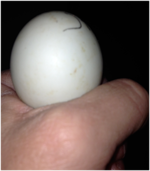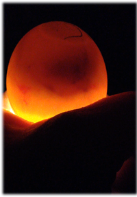 Candling is easy to discover which eggs are viable for the final days of hatching. 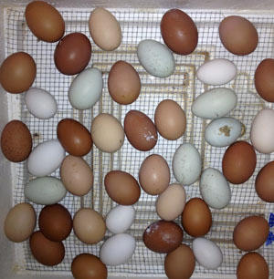 LOCKDOWN allows you to get the brooder box ready as the last 2 days of the hatch are here. 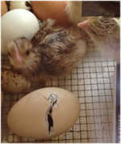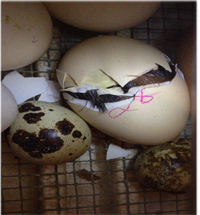 Pipping and peeping time when the egg tooth breaks a tiny hole in the shell. The chick gets to the tough job of pushing it's way out of the egg. 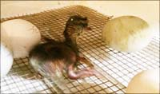 The newborn chick can last up to 24 hours in the incubator before it is moved to your brooder. 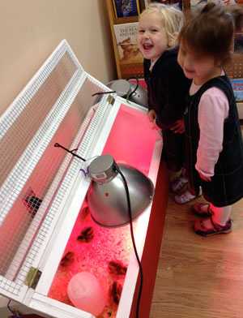 Here you can watch the chicks grow and get their feathers. They'll be trying to flutter about in less than a week! 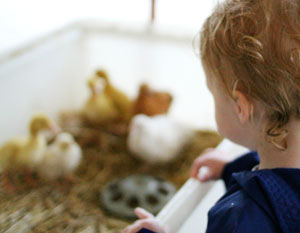 Back to the farm they come! We'll be sure to continue the gentle handling of your clutch as they grow to be show birds or layers. Thanks for being part of the adventure. All participants get their own or collector cards too! |
| HOME | Critter Visits Basics | Programs | Pricing | Critters | Photos | NEWS | Livestock Sales | Farm Folk | CONTACT US Copyright - Critter Visits & Woolley Wonderland Farm 2015 - 2016 |
|


Copyright - Critter Visits & Woolley Wonderland Farm 2015 - 2016